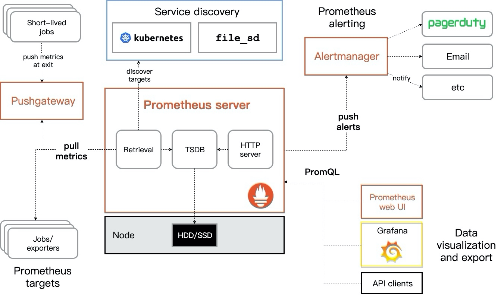

Prometheus组件与架构
Prometheus主要组件
Prometheus系统有多个组件构成，并且其中部分组件是可选的。大部分组件是由Go语言编写，所以使得这些组件很容易编译和部署。
- Exporter：类似Agent，安装在客户端上，用来监控数据，并向服务器端提供监控数据样本，常见的有：node_exporter用来收集硬件信息、mysqld_ exporter用于收集MySQL信息等。还可以根据需求自定义Exporter。
- Prometheus Server：核心的服务器端，主要负责存储时间序列数据。
- client library: 客户端，将需要被监控的服务生成对应的metrics，并暴露给Prometheus Server。
- Push Gateway：除了Pull方式，Prometheus还支持通过Push Gateway主动向服务端推送数据。该组件主要用于存在时间较短的任务，由于这类任务存在时间较短，可能当Prometheus来拉取(pull)之前，数据已经消失了，所以，这些任务可以直接向Prometheus Server主动端推送自己的metrics。这种方式主要用于服务层面的metrics，如果是机器层面的metrics，则需要用到exporter。
- Alertmanager：用来处理报警，将告警信息发送给用户。
Prometheus架构图

Prometheus服务，可以直接通过目标拉取数据，或者间接地通过中间网关拉取数据。它在本地存储抓取的所有数据，并通过一定规则进行清理和整理数据，并把得到的结果存储到新的时间序列中，Grafana和其他API可视化地展示收集的数据。
Prometheus的基本原理是通过HTTP协议周期性抓取被监控组件的状态，任意组件只要提供对应的HTTP接口就可以接入监控。不需要任何SDK或者其他的集成过程。这样做非常适合做虚拟化环境监控系统，比如VM、Docker、Kubernetes等。输出被监控组件信息的HTTP接口被叫做exporter。目前互联网公司常用的组件大部分都有exporter可以直接使用，比如Varnish、Haproxy、Nginx、MySQL、Linux系统信息(包括磁盘、内存、CPU、网络等等)。